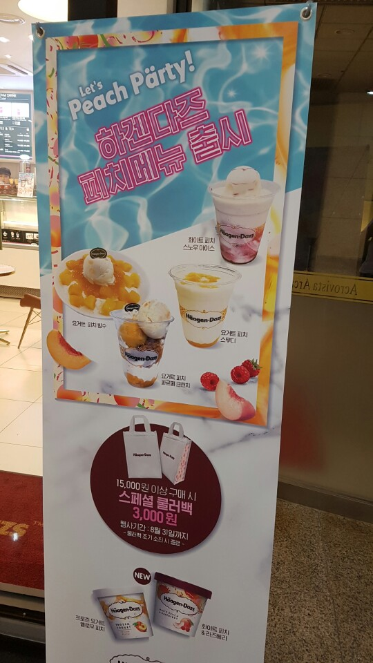
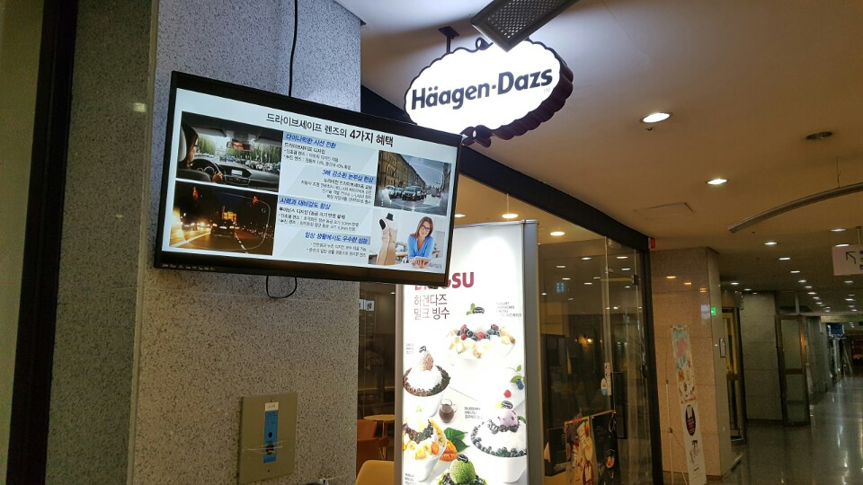

#Gibberish 4
네 달 전, 필자가 사는 아파트 지하상가에 하겐다즈 아이스크림 스토어가 입점했다. 4년 전 중국 상하이 상점 거리에서 처음으로 하겐다즈 스토어를 가본 적이 있었는데, 시중에서는 팔지 않는 색다른 여러 맛의 아이스크림을 즐길 수 있어서 무척 좋았던 기억이 난다. 그래서인지 스토어가 여기 아파트 단지에 막 입점했던 당시에도 굉장히 반가웠다.
필자는 오늘 오랜만에 가게를 들러 아이스크림을 샀는데, 문득 이 배너가 눈에 들어왔다.
저 위 ‘Let’s peach pärty!’라는 문구를 보자. 당연히 필자는 [lɛts piːʧ pʰɑ˞ɾi]라 읽어야 한다는 것을 알았지만, 아까는 처음 배너를 보고 본능적으로 [lɛts piːʧ pʰæ˞ɾi] 로 읽었다. 아니, 읽었다기보단 그렇게 읽혔다. 5일 간의 언어학 여름 캠프를 끝내고 와 이미 필자의 머릿속은 IPA 음성기호로 가득 찬 상태였고, 이틀 후가 본 대회인 상황에서 필자와 같은 이른바 음운론 ‘덕후’가 이런 사인을 보고 저렇게 읽은 것이 어쩌면 자연스러운 일이다.
저 사인을 본 필자의 솔직한 감정을 이야기해보면, 좀 당황스러우면서도 어이가 없었다. 무슨 생각으로 움라우트를 디자인 컨셉으로 쓰는 것인지 잘 모르겠다. 하겐다즈 상표를 잘 보면 Häagen-Dazs의 첫 ‘a’에 움라우트가 붙여져 있지만 읽을 때에는 그냥 ‘하겐다즈’라고 읽는다. 결국 상표의 움라우트는 장식용이라는 이야기인데, 이 디자인 컨셉을 그대로 유지하기 위해 ‘party’에도 움라우트를 붙인 것으로 보인다.
움라우트는 사실 역사음운론, 그리고 역사적 정자법의 관점에서 보면 무척이나 신비로운 현상이다. 특히, 나를 아이슬란드어의 깊은 매력에 빠지게 해준 아이슬란드어 움라우트는 정말 무한한 가치를 지니고 있다고 해도 과언이 아니다. 그런데, 그런 움라우트가 이런 곳에서 장식용으로 쓰이고 있다는 사실이 약간 안타깝게 다가온 것 같다.